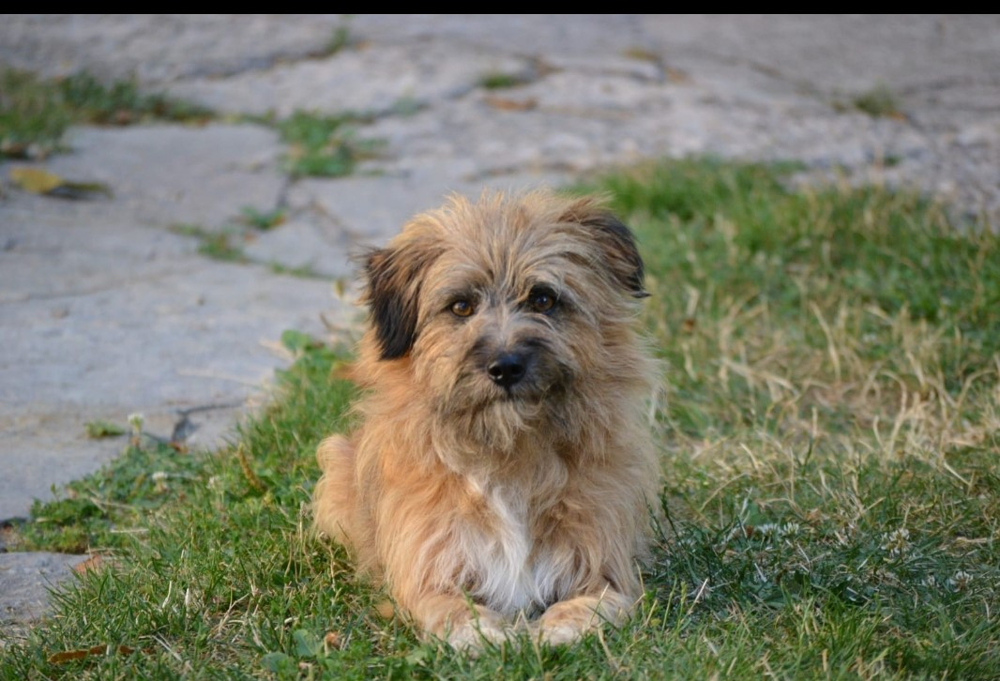

Ja sam Marija i ovo je moj prvi blog kij radim .Radim o životinjama jer volim životinje. Pisat ću najviše o psima i mačkama jer su mi to najdraže životinje.
Psi su bili prve domaće životinje među sisavcima. Ljudi su ih pripitomili prije otprilike 12 000 godina.
Sve pasmine potječu od vuka (Canis lupus) unatoč tvrdnjama nekih da potječu i od lisica.
Najsigurniji način za razvijanje osjećaja prema psima i njihovoj psihologiji je pažljivo promatranje štenadi u leglu.
Čak i prije nego što prestanu sisati, štenad počinje pokazivati karakteristike koje pseću vrstu čine korisnom ili problematičnom za ljude.
Uspješan odnos čovjeka i psa ovisi o mogućnosti vlasnika da "pročita

Ovo je moj pas Max. On je neki mješanac ali ne znam točno kojih pasmina.
Domaća mačka , kućna mačka ili najčešće mačka je mali mesožder iz obitelji mačaka.
Prvobitno potječe od afričke divlje mačke, a živi uz ljude već oko 3.500 godina.
Mačka spada među najomiljenije kućne ljubimce. 69 milijuna mačaka živi u američkim domovima[2] gdje su vrlo popularne, dok u cijelom svijetu živi preko 600 milijuna mačaka.
Postoji veliki broj raznih pasmina domaćih mačaka, rasnih i običnih, ali postoje i bezrepe ili bezdlake mačke, zbog mutacije.
Naziv domaća mačka koristi se za sve mačke koje manje-više "dobrovoljno" žive u direktnom kontaktu s ljudima i smatra se da su se svojevoljno pripitomile jer su u blizini ljudskih nastambi lako dolazile do plijena (kao što su miševi).
Ovo su dvije moje mačke koje se zovu Šapica to je siva mačka a narandžasta koja se nalazi na slici sa Max-om zove Garfild .